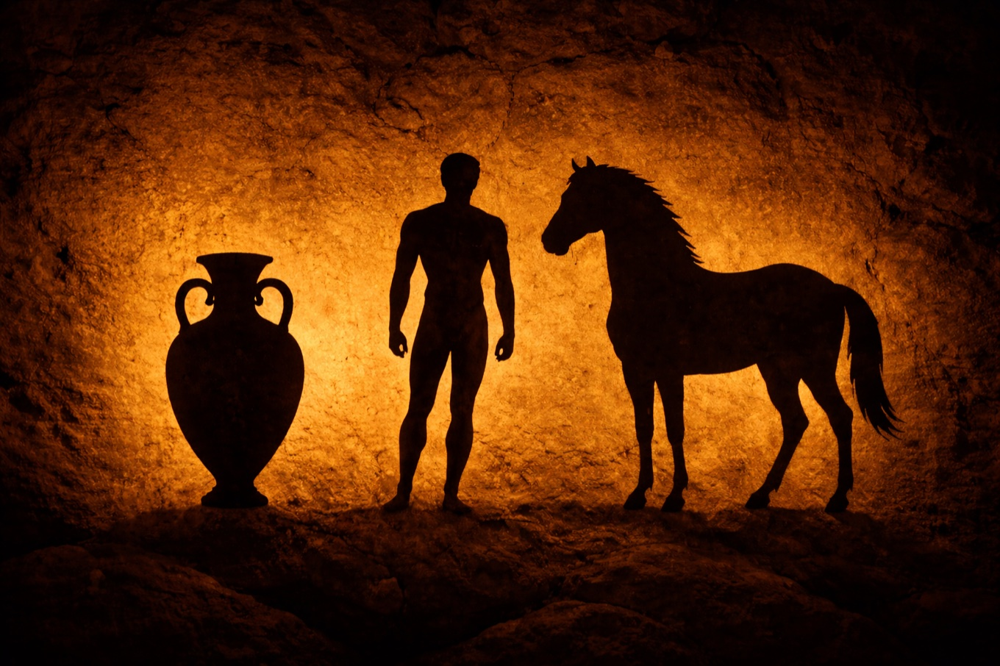
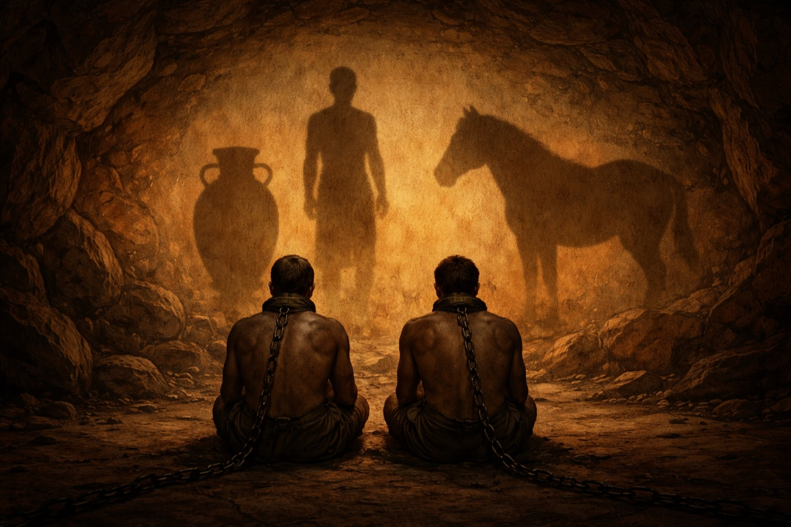
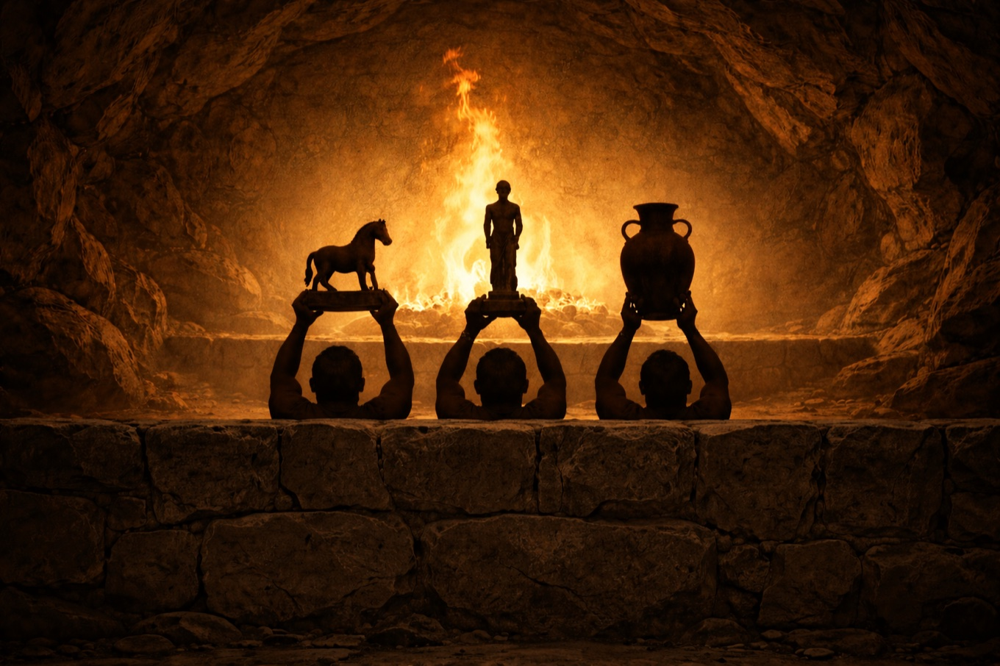
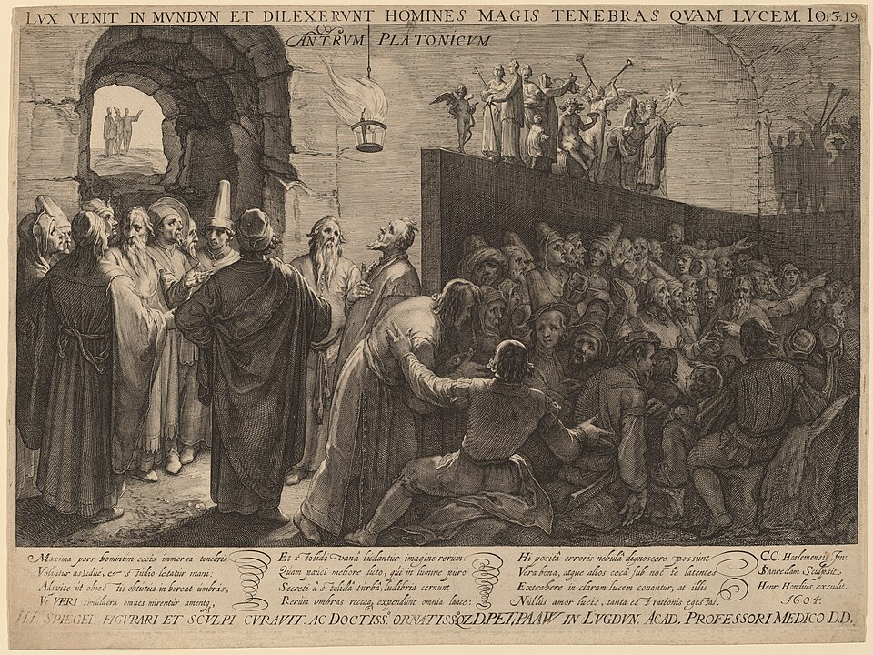
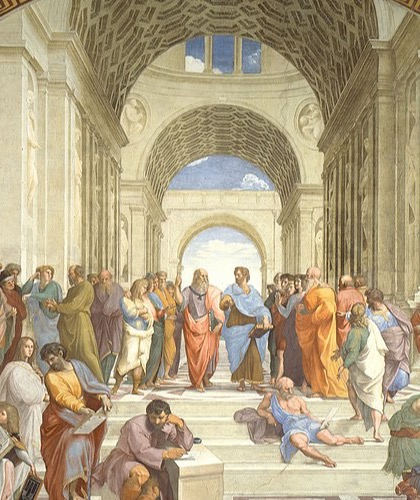

紀元前4世紀のアテネ郊外に、ひとつの学園があった。
紀元前387年頃、アテネの北西郊外——英雄アカデモスの名を冠した神域に近い一角に、ひとりの40歳の哲学者が私塾を開いた。この塾は創設地の名をとってアカデメイアアカデメイア(Ἀκαδημία)
プラトンがアテネ郊外に開いた学園。現代の「アカデミー(academy)」の語源。幾何学・算術・天文学・弁証法を中心に、紀元前387年頃から紀元後529年のユスティニアヌス帝による閉鎖まで、900年以上続いた。と呼ばれ、のちに「学問の場」を指す普通名詞となる。塾を開いたのは、プラトン——ソクラテスの弟子で、その死から12年が過ぎた頃だった。

プラトン(Πλάτων)
紀元前427年頃〜前347年頃
古代ギリシアの哲学者。ソクラテスの弟子、アリストテレスの師。アテネの名門貴族の家に生まれたが政治の道を断念し、哲学に生涯を捧げた。対話篇の形式で30篇以上を残し、その多くで師ソクラテスを主人公に据えている。中核思想である「イデア論」は、西洋哲学の2400年にわたる議論の出発点となった。
Photo: Marie-Lan Nguyen / Wikimedia Commons / CC BY 2.5(シラニオン作原型のローマ期模作)
プラトンがアカデメイアで講じ、対話篇として書き残した代表作が『国家(Πολιτεία, ポリテイア)』である。全10巻におよぶこの大著は、表向きは「正義とは何か」を問うものだが、話の途中で認識論・教育論・芸術論へと縦横に広がっていく。ここで少し注意がいる——『国家』は一人称の対話篇で、語り手はプラトン本人ではなく、師ソクラテスである。プラトンは自分を登場させず、亡き師の口を借りて自分の思想を述べるという形式をとった。紀元前399年に民主政アテネに殺された師への哀悼と敬意の表れでもあり、同時に「これはあくまで対話である」という距離を保つための仕掛けでもある。
その第7巻の冒頭、ソクラテスはグラウコン(プラトン自身の実の兄で、『国家』では主要な対話相手として登場する)にこう切り出す——地下の洞窟に、人間たちが鎖につながれて暮らしている、という話だ。
原文はおよそ6ページ。514aステファヌス番号(514a)
プラトンの著作を参照するときに使う、世界共通の引用記法。1578年にアンリ・エティエンヌ(ラテン語名 Stephanus)が出版したプラトン全集のページ番号が 514、そのページをさらに5等分した小区画(a・b・c・d・e)のうち先頭が a、という意味。紀元前の年号ではない。どの翻訳でも同じ場所を指せるように、ページ数ではなくこの番号で引用する。から520a520a
同じくステファヌス番号。ページ520の冒頭を指す。514aから520aまでで、ちょうど5〜6ページ分。まで。
古代ギリシア語原文
ἰδὲ γὰρ ἀνθρώπους οἷον ἐν καταγείῳ οἰκήσει σπηλαιώδει, ἀναπεπταμένην πρὸς τὸ φῶς τὴν εἴσοδον καὶ κατὰ πᾶν τὸ σπήλαιον, ἐν ταύτῃ ἐκ παίδων ὄντας ἐν δεσμοῖς καὶ τὰ σκέλη καὶ τοὺς αὐχένας, ὥστε μένειν τε αὐτοὺς εἴς τε τὸ πρόσθεν μόνον ὁρᾶν...
英訳(Benjamin Jowett, 1871)
"Behold! human beings living in an underground den, which has a mouth open towards the light and reaching all along the den; here they have been from their childhood, and have their legs and necks chained so that they cannot move, and can only see before them."
日本語訳
「ここに人間たちが、地下にある洞窟状の住まいのなかで暮らしているさまを、思い描いてほしい。この住まいには、光に向かって開かれた長い入口があり、その入口は洞窟全体の奥行きに等しい。そして人間たちは、子どものときからこの洞窟のなかで手足も首も縛られたまま暮らしていて、同じ場所から動くこともできず、前の方だけしか見られないでいる。」
——プラトン『国家』第7巻 514a(藤沢令夫訳を参考に邦訳)
プラトンが描く情景は、段階的に重ねられていく。読みすすめると、次のようなセットが少しずつ明かされる。
囚人の視野 — 首も足も鎖で縛られ、前の壁だけしか見られない

囚人にとって、この「影」こそが世界のすべてだった。壁に映る3つの影は、担ぎ手が運ぶ像——人形・壺・動物(石や木で作られた像)——が火で投影されたもの。
そして彼らの背後には——振り向けば見える場所には——まったく別の世界がある。だが鎖に縛られている限り、その存在は知りようがない。
囚人の目に映っている世界


壁に3つの影が揺れている。これが彼らにとっての世界のすべてだ。
※ 画像は演出のため原典と細部が異なる。(1) プラトン原典では担ぎ手の体は低い壁に完全に隠れ、頭上に掲げる像(人形)だけが壁の上に出る(人形劇の舞台と同じ構造)。本画像は担ぎ手の存在を読者に視認してもらうため、頭部まで見える構図にしている。(2) 火は原典では担ぎ手の歩く通路よりさらに後方かつ上方にあるとされる。本画像では構図を優先して担ぎ手の背後すぐに置いている。
いま見たものを言葉でも押さえておく。囚人は振り向けないので前方の壁だけを見ている。背後には火が燃えていて、火と囚人のあいだには腰くらいの高さの通路の壁がある。その通路を、人々が像(人形)を壁の上に掲げて通り過ぎていく——ちょうど人形劇の舞台裏のように。火の光が像を照らし、その影が囚人の正面の壁に映る。これが仕組みのすべてだ。
囚人たちは生まれてからずっとこの状態で、振り向いたこともなければ、影以外のものを見たこともない。——ならば当然、彼らにとって「現実」は、あの壁にちらつく影である。影に名前をつけ、影と影の関係を語り、影の動きから「次に何が起こるか」を予測するコンテストを開く。これが、彼らにとっての知の全体だ。

ヤン・サーンレダム『プラトンの洞窟』(1604) ——コルネリス・ファン・ハルレムの原画をもとにした銅版画。右手の囚人たちが壁を向いて座り、背後の火と担ぎ手の行列が影を作っている構図が、プラトンの記述とぴたりと重なる。 National Gallery of Art, Washington, D.C. / CC0 1.0(Public Domain)
この比喩が指しているのは、イデア論という世界観だ。
洞窟の比喩は、それだけ取り出すと「私たちの見ているものは影かもしれない」という一種の懐疑主義懐疑主義(scepticism)
私たちが何かを確実に知ることができるか疑う立場。古代ギリシアのピュロンに始まり、近代ではデカルトが「方法的懐疑」として体系化した。「感覚は信頼できるか」「確実な知は可能か」といった問いを中核とする。プラトン本人は懐疑主義者ではないが、洞窟の比喩だけを切り出すと懐疑主義的に読める、という意味。に読める。だがプラトン自身にとっては、これは彼の中心思想——イデア論——の一部として書かれた。『国家』第6巻から第7巻にかけて、彼は太陽の比喩太陽の比喩(Republic 506e-509c)
第6巻の終盤で語られる比喩。物を見えるようにしているのは太陽であり、認識を可能にしているのは善のイデアである、という類比。太陽が可視界で果たす役割(光を与え、物を見えるようにする)を、善のイデアが可知界(思考の世界)で果たすと説く。三つの比喩の出発点。・線分の比喩線分の比喩(Republic 509d-511e)
第6巻の最後に置かれる比喩。1本の線を2つに分け、さらに各部分を同じ比で分ける。下半分が「可視界」、上半分が「可知界」、それぞれをまた「影/実物」「数学的対象/イデア」に分ける。認識の4段階(①影像→②信念→③悟性的推論→④理性的直観)に対応する。この記事の下にある図がその視覚化。・洞窟の比喩洞窟の比喩(Republic 514a-520a)
第7巻の冒頭に置かれる、この記事の主題そのもの。鎖で縛られた囚人が壁の影を世界のすべてだと思い込んでいる洞窟の情景を通して、認識の段階と教育(魂の向き変え)の意味を描いた寓話。三つの比喩の中で最も視覚的で、後世への影響が圧倒的に大きい。という三つの比喩を連続して語る。どれも同じひとつの世界観を、違う角度から描いている。
イデア(ἰδέα)イデア(ἰδέα / idea)
プラトン哲学の中核概念。ギリシア語で「見えるもの」「姿」を意味する動詞「イデイン(見る)」から派生。英語のidea(観念)の語源だが、プラトンが言うイデアは頭のなかの観念ではなく、事物の本当の姿・原型。感覚で捉えられる個別のものの背後にあると想定される、非物質的・永遠・不変のもの。とは、私たちが日常的に使う「理想」や「観念」ではない。プラトンにとってイデアは、事物の本当の姿、原型のことだ。目の前にある個々のリンゴは傷があったり色が違ったりするが、それらが「リンゴ」として認識できるのは、その背後に「リンゴのイデア」という原型があるからだ、と彼は考えた。個々のリンゴは、イデアの不完全な影にすぎない。
イデア論の構造 — 不完全な個々と、完全な原型
目の前のどの円も、少し歪んでいたりサイズが違ったりする。それでも私たちは迷わず「これは円だ」と認識できる。プラトンは、その判断を可能にしているのは「円のイデア」という完全な原型があるからだ、と考えた。同じ構造は、リンゴでも、正義でも、美でも成り立つ——どれも、背後にある「〜のイデア」の不完全な影だ、という図式。
この考え方は、プラトンの学派の後継者アリストテレスによって早くから批判されてきた。アリストテレスは「イデア」を感覚界から切り離すのではなく、個々の事物のなかに「形相(エイドス)」として内在させる立場をとった。この師弟の対立は、その後2400年の西洋哲学を貫く軸になる。

ラファエロ『アテネの学堂』(1509-1511) ——ヴァチカン宮殿の壁画。中央のアーチの下に立つ2人の人物のうち、左がプラトン(『ティマイオス』を抱え、指を天に向ける)、右がアリストテレス(『ニコマコス倫理学』を持ち、手のひらを地に向けて押さえる)。イデア界(上)と現象界(下)、あるいは「真理は天上にある」と説く師と「真理は目の前のこの世界にある」と応じる弟子の対比が、一瞬の指の角度で描かれている。 Raphael, 1511 / Vatican, Apostolic Palace / Public Domain
三つの比喩を、ひとつの図で見る。
プラトンは第6巻の終わりで「線分の比喩」という図解的な説明を差し込んでいる。世界と認識を4段階に分けた、いわばプラトンの世界観の見取り図だ。
補足を加えておく。この図の下から上への流れが、プラトンにとっての教育だ。彼は『国家』第7巻で、教育を「知識を外から魂に吹き込むこと」ではないと強調する。そうではなく、魂はすでに視る力を持っている——ただ正しくない方向(影)を向いているだけだ、と。教育の仕事は、その魂の向きを変えること。ギリシア語でperiagōgē(ペリアゴーゲー、振り返り・向き変え)と呼ばれるこの動作が、洞窟の比喩で「縛られた囚人が振り向いて火を見る」場面と、図では「下から上へ段階を上がる」動きと、同じひとつの運動を指している。
線分の比喩で言う①「影像」から④「イデア」への上昇が、洞窟の比喩での「壁を向いた状態から太陽を直視する状態へ」の移動に対応する。つまり洞窟の比喩は、ただのSF的な思考実験ではなく、プラトンの認識論全体の圧縮版だったというわけだ。——プラトンがなぜ最後に「太陽を直視する」という、あえて肉眼では不可能な場面を描いたのかも、これで読める。彼にとって太陽は善のイデアの比喩であり、善のイデアこそが、あらゆる知の最終的な源泉だった。
物語は、ひとりが鎖を解かれるところから動きだす。
ここでプラトンは、ひとりの囚人が鎖を解かれ、立ち上がり、振り向くことを強制される、と仮定する。このとき、彼のなかで何が起こるか。プラトンは段階的に描いていく。
囚人の旅路 — 洞窟の比喩の6段階
首も足も縛られ、前方の壁だけを見ている。影の動きに名前をつけ、影どうしの関係を理解することが「知」のすべて。他の可能性は、想像することすらできない。
鎖を解かれ、首を回すことを強いられる。直接見る火はまぶしく、目が眩み、痛む。初めて見た「実物」は、影より不鮮明に見える。最初の反応は「影のほうが真実だ」と元の場所に戻りたがることだ。プラトンはこの「向き変え」をperiagōgē(魂の方向転換)と呼び、教育の本質と位置づけた。
無理やり洞窟の外へ連れ出される。陽光は強すぎて、しばらく何も見えない。まず影を見、次に水面に映る像を見、それから物そのものを見られるようになる。段階的に目が慣れていく。
やがて夜の空、月、星々を見るようになり、最後に太陽そのものを直視できるようになる。プラトンはこの太陽を「善のイデア」の比喩として描く。太陽がすべてのものを見えるようにする光の源であるように、善のイデアはすべての知識と真実を成立させる根源である、と。
真実を見た者は、洞窟に残る仲間のことを思い、戻る義務がある、とプラトンは書く。だが戻った彼は、もう影の動きを正確に予測できない(目が外の光に慣れて、暗がりでは逆に見えにくくなっている)。仲間からは「外に出たらバカになって帰ってきた」と笑われる。
もし彼が「きみたちが見ているのは影だ」と言い続けるなら、仲間は怒り、彼を殺そうとするだろう——とプラトンは書く。この結末に、紀元前399年に死刑にされたソクラテスの姿が重ねられていることは、古代から指摘されてきた。『国家』が書かれたのは、師の死から30年足らず後のことだ。
この物語は「認識のアップグレードは痛みを伴う」という寓話として読むこともできるし、「民主政に殺された師への哀悼」として読むこともできる。だが一番よく引用されるのは、もっと単純なメッセージだ——あなたが今「現実」だと思っているものは、壁に映った影かもしれない。
誤解
イデア論=「理想を目指せ」という道徳論
実際は
「イデア」は理想や目標ではなく、事物の本当の姿・原型。私たちが見ている個々のリンゴは「リンゴのイデア」の不完全な影にすぎない、という存在論存在論(ontology)
「何が存在するか」「存在とは何か」を問う哲学の分野。アリストテレスが『形而上学』で「存在としての存在」の学と呼んで以来、西洋哲学の中心テーマのひとつ。「リンゴのイデアは本当に存在するのか」を真剣に問うのは存在論の仕事。的な主張。
誤解
洞窟=単なる「無知な大衆」の比喩
実際は
プラトンは「教育によって大衆を啓蒙せよ」と書いているのではない。認識の仕組みそのもの——人間は誰しも、なんらかの影の体系のなかで世界を理解している——という普遍的な構造を論じている。
誤解
「真理」は洞窟の外にあり、行けば見える
実際は
原典で強調されるのは痛みと段階だ。光は最初まぶしすぎて見えない。水面の映像、物、星、と順を追って目が慣れる。「到達すれば完了」という話ではなく、向き変えの過程そのものが哲学だ、という話。
影から、元の形が分かるか。
プラトンの比喩を頭で理解するのと、「影だけを見て世界を組み立てる」ことの具体的な難しさを体で感じるのは別だ。ここでは3つのフェーズでそれを体験してみる。実際に影を見て、推測し、答え合わせをして、それでも情報が足りないことを確認する。
壁に映る影だけが見えている。これを作っているのは、どんな形の物体だろうか。A・B・Cから直感で選んでみてほしい。
Phase 1で気づくのは、ひとつの影から元の形は一意に決まらないということだ。球も、真上から見た円柱も、底面から見た円錐も、同じ円形の影を壁に落とす。壁の前の囚人は、この3つを区別する手がかりを持っていない。Phase 2では、視点(光源の角度)を変えても、影から立体の情報は完全には戻ってこないことが分かる。
影の正体 — 壁に映る「何か」は、実は…
影が伝えるのは"輪郭"だけ。その輪郭が何によって作られているかは、振り向かない限り分からない。壁の前に縛られた囚人にとって、影は揺るぎない"実在"だ。
3次元を2次元に落とすと、戻れない。
影という現象の数学的な正体は、3次元の物体を2次元の平面に射影することだ。点(x, y, z)から高さ軸zを消して点(x, y)にする——それだけの単純な操作で、影は作られる。しかしこの操作は、情報の観点から見ると一方向の変換である。
一度捨てた情報は、基本的に取り戻せない。多数の3次元の物体が、同じひとつの2次元の影を作りうる。光源の角度を変えれば影の形は変わるが、それでも元の3次元の形を完全に再構成するのに必要な情報は、有限の観測回数では集まらない。これは数学的に証明できる事実で、医療画像のCTCT(Computed Tomography)
コンピュータ断層撮影。物体の周囲360度からX線投影を撮り、数学的な逆問題(ラドン変換の逆変換)を解いて3次元画像を再構成する技術。原理上、無限回の投影があれば完全再構成できる。1979年にノーベル生理学・医学賞を受賞した。やMRIが、この情報損失を補うために360度の角度から撮影するのは、そのためだ。
プラトンの提案はもっと過激だった。
プラトンは「影から元を推測する」作業をより洗練させよう、とは言っていない。彼の提案はもっとラジカルだ——そもそも影を見ていた壁ではなく、自分の体ごと方向を変えて、光源のほうを見ろと言う。つまり認識を精密にするのではなく、認識の方向そのものを変えろ、と。この動作をプラトンはperiagōgē(ペリアゴーゲー、魂の向き変え)と名づけ、教育の本質だと述べた。
| 情報科学的アプローチ | プラトン的アプローチ | |
|---|---|---|
| 前提 | 影の観測回数を増やせば復元できる | 観測を増やしても壁を向いている限り限界がある |
| 戦略 | CTのように360度から撮る | 体の方向を変え、光源そのものを見に行く |
| 必要なもの | 計算力と時間 | 鎖を解くこと、まぶしさに耐えること |
| 痛み | ほぼない | 本質的に痛みを伴う |
| 評価 | 効率のよい近似 | 認識の質的なアップグレード |
情報科学的に見れば、プラトンの提案は非効率で暴力的に映る。だが「何を疑い、どこを見るか」を根本から問い直すという意味で、この提案は2400年後のいまも生きている。私たちはSNSの影の集合を精密化する道具(レコメンド、フィルタ、検索アルゴリズム)を洗練させつづけているが、プラトンなら「壁を向いたまま観測を増やしても、太陽は見えない」と言うだろう。
2400年をかけた影の旅
紀元前375年頃
プラトン『国家』第7巻
アカデメイア創設期(前387年頃)から10年ほどの間に執筆されたとされる。全10巻中、第7巻の514a-520aに洞窟の比喩が位置する。
前399年
ソクラテスの刑死
「青少年を堕落させた」「神々を敬わなかった」などの罪状で、アテネ民主政がプラトンの師ソクラテスを死刑にした。洞窟から戻った者が殺されそうになる結末は、この事件の影を色濃く落としている。
3世紀
新プラトン主義
プロティノスらがプラトンの思想を神秘主義的に再解釈。「一者(ト・ヘン)」への魂の上昇という図式が、のちのキリスト教神学に吸収されていく。
13世紀
中世スコラ哲学への吸収
アウグスティヌスを通じて西方キリスト教世界に流入していたプラトン主義が、アリストテレス再発見とともにスコラ哲学の中核を形成。「感覚界と可知界の二分」という枠組みが西洋思想の基調となる。
1604年
ヤン・サーンレダムの版画
オランダの銅版画家サーンレダムが、コルネリス・ファン・ハルレムの原画をもとに洞窟の比喩を視覚化。この作品が、後世の洞窟イメージの「決定版」として広く流通した。
1931年
ハイデガー「プラトンの真理論」
マルティン・ハイデガーがフライブルク大学の講義で洞窟の比喩を詳細に論じる(のちに同名の論文として刊行)。真理(ἀλήθεια)を「隠れからの開示」と読み替え、近代以降の真理観に疑問を投げかけた。
1958年
アーレント『人間の条件』
ハンナ・アーレントがハイデガーの解釈を批判。プラトンは「自分のイデア論を政治に適用しようとした」のであり、政治思想として読むべきだと論じた。認識論 vs 政治論の対立軸が明確化する。
1998-99年
『ダーク・シティ』『マトリックス』『トゥルーマン・ショー』
わずか1年のあいだに、洞窟の比喩を下敷きにした3本の映画がほぼ同時に公開される。20世紀末のテクノロジー不安と重なり、プラトンの寓話が大衆文化に浸透した。
2010年代
エコーチェンバーとフィルターバブル
SNSのアルゴリズムが作る「自分の信念を補強する影だけが映る壁」が、洞窟の比喩で繰り返し語られるようになる。比喩は一度古典に昇格したあと、ふたたび現代的な語彙として流通しはじめた。
洞窟の外には、まだ出ていないほうがいい。
プラトンの比喩がこれほど長く生き残ったのは、「影と実体」という単純な2項対立が、時代ごとに新しい衣装をまとって再登場できる便利な器だったからだ。中世では感覚界と神、近代では現象と物自体、20世紀末ではシミュレーションと現実、21世紀ではSNSとオフラインの出来事。壁と影と火の配置は同じで、名前だけが変わる。
οὐ τοῦ ἐμποιῆσαι αὐτῷ τὸ ὁρᾶν, ἀλλ' ὡς ἔχοντι μὲν αὐτό, οὐκ ὀρθῶς δὲ τετραμμένῳ οὐδὲ βλέποντι οἷ ἔδει, τοῦτο διαμηχανήσασθαι.
教育とは、魂に視る力を外から吹き込むことではない。
魂はすでにそれを持っている。ただ正しくない方向を向いているのを、
向きを変えさせること——それこそがその技術である。
——プラトン『国家』第7巻 518d518d(ステファヌス番号)
ページ518のd段。洞窟の比喩の終盤、プラトン自身が比喩の意味を説明する場面にあたる。——ステファヌス番号とは、1578年刊行のプラトン全集ページに基づく世界共通の引用記法(各ページをa〜eの5段に分ける)。詳しくは冒頭「514a」のツールチップ参照。(藤沢令夫訳を参考に邦訳)
映画『マトリックス』の最後、ネオはシミュレーションを「破壊」して外に出る。これはハリウッド的な英雄譚だが、プラトンの原典はもう少し静かだ。洞窟の住人は外に出ても殺される(あるいは笑われる)。出た者が偉くなるのでもなく、権力を得るのでもない。ただ「戻る義務」だけがある。真実を見た者は、影のなかに残る仲間のもとへ戻って、また笑われながら語りつづける。
プラトンの洞窟は、どこかの遠い場所にある話ではない。壁を向いて座っている私たちの、いまの条件そのものだ。影が悪なわけでもない——問題は、それが影だと知らずに眺めつづけることだ。自分がいま見ているものが、誰によって、どの火で、どんな壁に映されているか。その配置に気づいた瞬間、2400年前のこの比喩は役目を果たしたことになる。
文化への浸透
洞窟の比喩は、西洋芸術が「認識の境界」を描くときの雛型として機能してきた。映画では『トゥルーマン・ショー』(1998)、『マトリックス』(1999)、『ダーク・シティ』(1998)、『プレザントヴィル』(1998)、『アイランド』(2005)、『アス』(2019)、Netflixドラマ『1899』(2022)などが直接の系譜にある。『ダーク・シティ』は特に、記憶と環境の全てが作られた街という設定において、プラトンの洞窟をSFとして再構成した稀有な作品だ。哲学の外では、マーシャル・マクルーハン『メディアはマッサージである』(1967)、ジャン・ボードリヤール『シミュラークルとシミュレーション』(1981)、イーライ・パリサー『フィルター・バブル』(2011)といったメディア論の中核概念に、洞窟の比喩は形を変えて引き継がれている。
21世紀の私たちは、常時オンラインの画面のなかで大半の時間を過ごしている。目の前で動いている影の体系(タイムライン、おすすめ、通知)を精密化するサービスが、これほど無料で大量に提供されたことは人類史上ない。プラトンの比喩は、この時代にこそ、そのままの形で読める古典になっている。
ただし、出口は明確ではない。洞窟を出れば即「真実」という単純な話ではなく、プラトンが描いたのは段階的な目の慣らしと、戻ったあとの笑いと、そして暴力の予感だった。——今夜、スマートフォンを置いて窓の外の空を見上げるとき、ほんの数分でいい。2400年前に書かれた「振り向く」という動作が、どれほど大きな飛躍を意味するのか、考えてみてほしい。
Plato, Republic, Book 7(514a-520a)
ギリシア語原文と英訳(ポール・ショリー訳)が対照できる学術リポジトリ。洞窟の比喩の該当箇所を前後の文脈とあわせて読める。
日本語圏でもっとも広く読まれる邦訳。厳密でありながら読みやすく、第7巻の訳注も充実している。
The Cambridge Companion to Plato's Republic
『国家』研究の標準的なコンパニオン。第7巻および洞窟の比喩に関する複数の論文が収録され、認識論的解釈と政治的解釈の対立も整理されている。
"Platons Lehre von der Wahrheit"(プラトンの真理論)
1931-32年の講義をもとにしたハイデガーの論考。洞窟の比喩を手がかりに、真理(ἀλήθεια)の概念が古代ギリシアから近代にかけてどう変質したかを論じる。20世紀以降のプラトン解釈における重要文献。
Plato's Ethics and Politics in The Republic
スタンフォード哲学百科事典の『国家』項目。洞窟の比喩を含む第7巻の議論が、倫理学・政治学の文脈で整理されている。査読付きで信頼性が高い。
原典は『国家』第7巻 514a-520a(藤沢令夫訳を参考にした邦訳、およびJowett英訳・Perseus所収のギリシア語原文に準拠)。執筆時期の「紀元前375年頃」は学界で比較的広く共有される推定で、正確な年月日は確定していない(380-370年の幅で諸説あり)。ソクラテスの刑死とプラトンの執筆の間の因果関係は古代から指摘されてきたが、直接的な言及は原典にはない。ハイデガー/アーレントの解釈の対立は、Arendt『人間の条件』および関連書簡に基づく。哲学的思考実験であり、実証的な「正解」は存在しない。